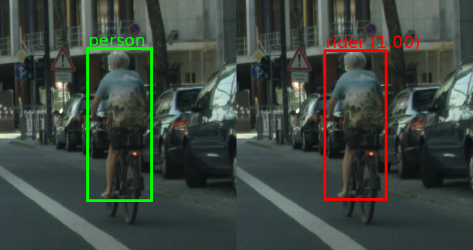
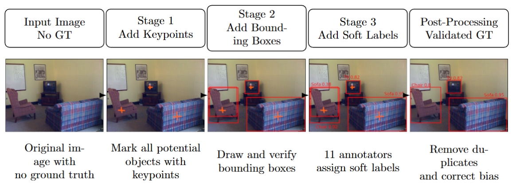

Object Detection Benchmarks are Incomplete:
The Role of Label Errors and Annotation Uncertainty
Sarina Penquitt1, 4 • Jonathan Kleest1, 4 • Antonia van Betteray1 • Parssa Jashnieh1 • Peter Stehr2 • Matthias Rottmann1, 5 • Lars Schmarje3, 5
1 Institute of Computer Science, University of Osnabrück, Osnabrück, Germany
2 Department of Mathematics, University of Wuppertal, Wuppertal, Germany
3 Wayve, London, United Kingdom
4 Equal contribution
5 Equal contribution


Abstract
While object detection has advanced through improved architecutres and open-vocabulary models, we provide strong evidence that benchmark quality is fundamentally limited by annotation incompleteness. Across four widely used datasets -- COCO, Pascal VOC, Cityscapes, and KITTI-- re-annotation reveals substantial increases in annotated objects, driven primarily by previously unlabeled small, occluded, or densely packed instances.
We introduce a scalable annotation pipeline that emphasizes high recall and captures ambiguity through soft labels aggregated from at least 11 annotators per object. The resulting annotations improve coverage and align well with human calibration. Based on these annotations, we establish two large-scale benchmarks: an uncertainty-aware object detection benchmark, and a label error detection benchmark grounded in real label errors.
Annotation Pipeline
A three-stage crowdsourcing microtask pipeline decomposes the annotation task to maximize recall and quality independently at each step.

Step 1: Keypoint Collection All potential objects of a given class are marked with a keypoint. Uncertain and partially visible objects are included.
Step 2: Bounding Box For each keypoint, a tight bounding box is drawn and verified.
Step 3: Soft Labels 11+ annotators assign class labels per box, producing a probability distribution that captures annotation uncertainty.
Annotation Completeness
Our re-annotation substantially improves dataset completeness. The validated ground truth contains more annotated objects across all datasets, with particularly large increases for KITTI (+60.0%) and COCO (+40.0%). To further assess annotation completeness, we manually review randomly sampled images and estimate the fraction of visible objects missing from the annotations. The validated ground truth consistently shows substantially lower false negative rates across all datasets, indicating that our annotation pipeline successfully recovers a large fraction of previously missed objects.
$$ \begin{array}{l|ccc} \hline \text{Dataset} & \text{Original} & \text{Validated (Ours)} & \Delta[\%]\uparrow \\ \hline \text{Cityscapes} & 62{,}649 & 65{,}856 & +5.1 \\ \text{Pascal VOC} & 31{,}561 & 34{,}262 & +8.6 \\ \text{KITTI} & 39{,}597 & 63{,}348 & +60.0 \\ \text{COCO} & 36{,}781 & 51{,}487 & +40.0 \\ \hline \end{array} $$ Object Count Increase
$$ \begin{array}{l cc} \hline \text{Dataset} & \text{Original} & \text{Validated (Ours)} \\ \hline \text{Pascal VOC} & 18.6 \pm 1.7 & 9.3 \pm 1.3 \\ \text{COCO} & 13.1 \pm 1.0 & 6.1 \pm 0.7 \\ \text{KITTI} & 41.5 \pm 1.3 & 11.6 \pm 0.8 \\ \text{Cityscapes} & 11.1 \pm 0.6 & 3.8 \pm 0.3 \\ \hline \end{array} $$ False Negative Rate
Two New Benchmarks
Current detectors are strongly depended on annotation quality and are misaligned with human perception. Current label error detection methods, which have been shown to perform well on synthetic noise, struggle to achieve high recall and precision on real label errors. Our results highlight the need for future object detection benchmarks to move beyond deterministic annotations toward high-recall, uncertainty-aware evaluation that maximizes valid instances and better reflects real-world ambiguity.
Object Detection Benchmark
Benchmark performance is highly sensitive to annotation quality, though model rankings remain largely stable. A new evaluation protocol that generalizes average precision (AP) to soft labels, enabling instance-wise comparison between model predictions and human annotation uncertainty.
$$ \begin{array}{l|cc|cc|cc|cc} \toprule & \text{COCO} & & \text{Pascal VOC} & & \text{KITTI} & & \text{Cityscapes} & \\ \text{Model} & \text{Orig.} & \text{Val.} & \text{Orig.} & \text{Val.} & \text{Orig.} & \text{Val.} & \text{Orig.} & \text{Val.} \\ \midrule \text{Grounding DINO} & 0.5690 & 0.5210 & 0.8005 & 0.7378 & 0.2918 & \underline{0.3942} & 0.3419 & 0.4382 \\ \text{YOLOv8-World v2} & 0.4453 & 0.4377 & 0.6965 & 0.6544 & 0.1986 & 0.2444 & 0.2411 & 0.3035 \\ \text{OWL-ViT} & 0.2868 & 0.2855 & 0.5275 & 0.4921 & 0.0928 & 0.0955 & 0.1160 & 0.1378 \\ \text{RT-DETR-L} & 0.5239 & 0.4720 & 0.7028 & 0.6418 & 0.7846 & \textbf{0.2733} & 0.3822 & 0.4248 \\ \text{YOLOv8-L} & 0.5168 & 0.4779 & 0.7442 & 0.6739 & 0.7468 & \textbf{0.2666} & 0.3814 & 0.4435 \\ \text{Faster R-CNN} & 0.4709 & 0.4312 & 0.6125 & 0.5557 & 0.6529 & \textbf{0.2672} & 0.3591 & 0.4102 \\ \bottomrule \end{array} $$
Object Count Increase
Impact of Annotation Quality on Object Detection Performance. We evaluate several object detectors, trained on the original ground truth against both the original and our validated annotations. The results show that detector performance can change substantially when evaluated on the more complete ground truth, particularly on KITTI, where large differences are observed for several models. These findings demonstrate that annotation completeness and quality can have considerable impact on reported benchmark performance and the conclusions drawn from model comparisons.
$$ \begin{array}{l c c c c c c c} \toprule \text{Model} & \text{AS}_{50..95}\,\uparrow & \text{AS}_{\text{S}}\,\uparrow & \text{AS}_{\text{L}}\,\uparrow & \text{TVD}\,\downarrow & \text{TVD}_{\text{TP}}\,\downarrow & \sqrt{\mathrm{JS}}\,\downarrow & \sqrt{\mathrm{JS}}_{\text{TP}}\,\downarrow \\ \midrule \text{Grounding DINO} & \textbf{0.5508} & \textbf{0.3842} & \textbf{0.7875} & \textbf{0.1198} & 0.3823 & \textbf{0.1636} & 0.3495 \\ \text{YOLOv8-World v2} & 0.4808 & 0.3060 & 0.7032 & 0.1641 & 0.3758 & 0.2230 & 0.3570 \\ \text{OWL-ViT} & 0.3583 & 0.1402 & 0.6781 & 0.1386 & 0.7524 & 0.1845 & 0.6305 \\ \text{RT-DETR-L} & 0.4910 & 0.3226 & 0.7454 & 0.1406 & 0.4688 & 0.1934 & 0.4397 \\ \text{YOLOv8-L} & 0.4664 & 0.3032 & 0.6779 & 0.1756 & 0.3312 & 0.2374 & 0.3170 \\ \text{Faster R-CNN} & 0.4395 & 0.2965 & 0.6129 & 0.1815 & \textbf{0.2468} & 0.2190 & \textbf{0.2552} \\ \bottomrule \end{array} $$
Soft Label-Based Evaluation of Object Detectors. We evaluate how well model predictions align with human uncertainty using our soft-label annotations. Average Similarity (AS) measures the similarity between predicted and ground truth class distributions, while total variation distance (TVD) and Jensen-Shannon distnace (\sqrt(JS}) quantify the discrepancy. The subscript TP restricts the respective metric to predictions matched with a ground-truth object, while S and L denote small and large objects. Overall, Grounding DINO achieves the highest AS and performs best across all predictions, whereas Faster R-CNN shows the closest alignment with human soft labels for matched predictions.
Label Error Detection Benchmark
The first large-scale benchmark for label error detection in object detection grounded in real label errors and not synthetic noise. Current methods that perform well on synthetic settings struggle significantly on real-world label errors, highlighting a substantial gap.
$$ \begin{array}{l c c c | c c c} \toprule & & \text{Less Restrictive} & & & \text{Stricter} & \\ \text{Dataset} & \text{Missing} & \text{Misaligned} & \text{Classification} & \text{Missing} & \text{Misaligned} & \text{Classification} \\ \midrule \text{Cityscapes} & \text{5,249 (8.4 %)} & \text{2,385 (3.8 %)} & \text{85 (0.1 %)} & \text{2,229 (3.6 %)} & \text{1,318 (2.1 %)} & \text{56 (0.1 %)} \\ \text{COCO} & \text{16,219 (44.1 %)} & \text{7,736 (21.0 %)} & \text{254 (0.7 %)} & \text{2,685 (7.3 %)} & \text{3,497 (9.5 %)} & \text{98 (0.3 %)} \\ \text{KITTI} & \text{22,710 (57.4 %)} & \text{7,167 (18.1 %)} & \text{1,026 (2.6 %)} & \text{961 (2.4 %)} & \text{2,174 (5.5 %)} & \text{479 (1.2 %)} \\ \text{Pascal VOC} & \text{3,654 (11.6 %)} & \text{2,210 (7.0 %)} & \text{52 (0.2 %)} & \text{761 (2.4 %)} & \text{1,290 (4.1 %)} & \text{25 (0.1 %)} \\ \bottomrule \end{array} $$
Label Errors in the Original Ground Truth. We compare the original and validated ground truth to identify three types of label errors: missing bounding boxes, misaligned bounding boxes, and classification errors. We report results for a less restrictive setting considering all objects with confidence $p\ge 0.5$, and a stricter setting considering high-confidence objects ($p\ge 0.8$) with a minimum height of 40 pixels. Across all datasets, missing bounding boxes are the most common error typed, followed by misaligned boxes, while classification errors are comparatively rare. The substantial reduction in errors under the stricter setting further indicates that many annotation differences are associated with small objects.
Label Error Detection Benchmark. We evaluate several label error detection methods on real label errors across four datasets using average precision (AP), precision, recall, and F1-score. While the naive baseline achieves nearly perfect recall, its very low precision makes it impractical for efficient dataset review. The score baseline performs best overall, achieving the highest F1-score and AP across all datasets. Overall, the results show that existing methods still struggle to reliably identify real-world label errors, highlighting a substantial gap between performance on synthetic and real label errors.
Resources & Links
Acknowledgments

S.P., J.K.\ and M.R.\ acknowledge support by the German Federal Ministry of Research, Technology and Space (BMFTR) within the project ``RELiABEL'' (grant no.\ 16IS24019B). L.S.\ also acknowledges support by the BMFTR within the same project ``RELiABEL'' (grant no.\ 16IS24019A).
Citation
@misc{penquitt2026objectdetectionbenchmark,
title={Object Detection Benchmarks are Incomplete: The Role of Label Errors and Annotation Uncertainty},
author={Sarina Penquitt and Jonathan Klees and Antonia van Betteray and Parssa Jashnieh and Peter Stehr and Matthias Rottmann and Lars Schmarje},
year={2026},
eprint={2609.21822},
archivePrefix={arXiv},
primaryClass={cs.CV},
url={https://arxiv.org/abs/2609.21822},
}
Contact
Have questions or want to collaborate? Reach out: